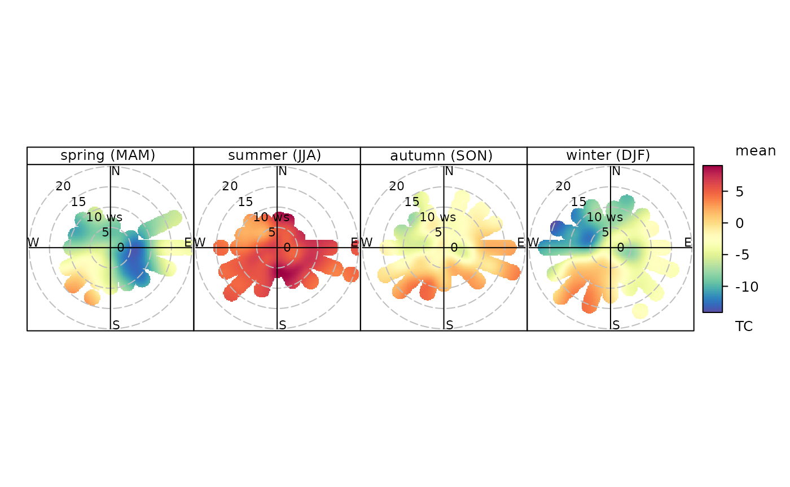

library(climate)
# downloading data
df <- meteo_ogimet(interval = "hourly",
date = c("2018-01-01", "2018-12-31"),
station = "01008")## [1] "01008"
##
|
| | 0%[1] "https://www.ogimet.com/cgi-bin/gsynres?ind=01008&lang=en&decoded=yes&ndays=31&ano=2018&mes=12&day=31&hora=23"## /tmp/Rtmp98UUGj/file3fe4c1394d##
|
|====== | 8%[1] "https://www.ogimet.com/cgi-bin/gsynres?ind=01008&lang=en&decoded=yes&ndays=30&ano=2018&mes=11&day=30&hora=23"## /tmp/Rtmp98UUGj/file3fe10e25eb1##
|
|============ | 17%[1] "https://www.ogimet.com/cgi-bin/gsynres?ind=01008&lang=en&decoded=yes&ndays=31&ano=2018&mes=10&day=31&hora=23"## /tmp/Rtmp98UUGj/file3fe4776c08c##
|
|================== | 25%[1] "https://www.ogimet.com/cgi-bin/gsynres?ind=01008&lang=en&decoded=yes&ndays=30&ano=2018&mes=09&day=30&hora=23"## /tmp/Rtmp98UUGj/file3fe2c795edb##
|
|======================= | 33%[1] "https://www.ogimet.com/cgi-bin/gsynres?ind=01008&lang=en&decoded=yes&ndays=31&ano=2018&mes=08&day=31&hora=23"## /tmp/Rtmp98UUGj/file3fe3b2d3543##
|
|============================= | 42%[1] "https://www.ogimet.com/cgi-bin/gsynres?ind=01008&lang=en&decoded=yes&ndays=31&ano=2018&mes=07&day=31&hora=23"## /tmp/Rtmp98UUGj/file3fe7d0d342##
|
|=================================== | 50%[1] "https://www.ogimet.com/cgi-bin/gsynres?ind=01008&lang=en&decoded=yes&ndays=30&ano=2018&mes=06&day=30&hora=23"## /tmp/Rtmp98UUGj/file3fe412abedd##
|
|========================================= | 58%[1] "https://www.ogimet.com/cgi-bin/gsynres?ind=01008&lang=en&decoded=yes&ndays=31&ano=2018&mes=05&day=31&hora=23"## /tmp/Rtmp98UUGj/file3fe16822b35##
|
|=============================================== | 67%[1] "https://www.ogimet.com/cgi-bin/gsynres?ind=01008&lang=en&decoded=yes&ndays=30&ano=2018&mes=04&day=30&hora=23"## /tmp/Rtmp98UUGj/file3fe113fe3e2##
|
|==================================================== | 75%[1] "https://www.ogimet.com/cgi-bin/gsynres?ind=01008&lang=en&decoded=yes&ndays=31&ano=2018&mes=03&day=31&hora=23"## /tmp/Rtmp98UUGj/file3fe409873b6##
|
|========================================================== | 83%[1] "https://www.ogimet.com/cgi-bin/gsynres?ind=01008&lang=en&decoded=yes&ndays=28&ano=2018&mes=02&day=28&hora=23"## /tmp/Rtmp98UUGj/file3fe1d394640##
|
|================================================================ | 92%[1] "http://ogimet.com/cgi-bin/gsynres?ind=01008&lang=en&decoded=yes&ndays=31&ano=2018&mes=02&day=1&hora=00"## /tmp/Rtmp98UUGj/file3fe3c43889e##
|
|======================================================================| 100%[1] "https://www.ogimet.com/cgi-bin/gsynres?ind=01008&lang=en&decoded=yes&ndays=31&ano=2017&mes=12&day=31&hora=23"## /tmp/Rtmp98UUGj/file3fe48d5e8c5##
## Attaching package: 'dplyr'## The following objects are masked from 'package:stats':
##
## filter, lag## The following objects are masked from 'package:base':
##
## intersect, setdiff, setequal, union
library(openair) # external package for plotting wind roses
# converting wind direction from character into degress required by most
wdir <- data.frame(ddd = c("CAL","N","NNE","NE","ENE","E","ESE","SE","SSE",
"S","SSW","SW","WSW","W","WNW","NW","NNW"),
dir = c(NA, 0:15 * 22.5), stringsAsFactors = FALSE)
# changing date column to the format required by openair package:
df$Date <- as.POSIXct(df$Date, tz = "UTC")
df$date <- df$Date
df <- left_join(df, wdir)## Joining, by = "ddd"
df$ws <- df$ffkmh / 3.6 # conversion to m/s from km/h
df$gust <- df$Gustkmh / 3.6 # conversion to m/s from km/h
windRose(mydata = df, ws = "ws", wd = "dir", type = "season", paddle = FALSE,
main = "Svalbard Lufthavn (2018)", ws.int = 3, dig.lab = 3, layout = c(4, 1))
# do we miss any data?
summaryPlot(df[ ,c("date", "TC", "ws", "gust")])## date1 date2 TC ws gust
## "POSIXct" "POSIXt" "numeric" "numeric" "numeric"
# which sectors are responsible for warm/cold air mass advection:
polarPlot(df, pollutant = "TC", x = "ws", wd = "dir", k = 50, force.positive = FALSE,
type = "season", layout = c(4, 1), resolution = "fine", normalise = FALSE)